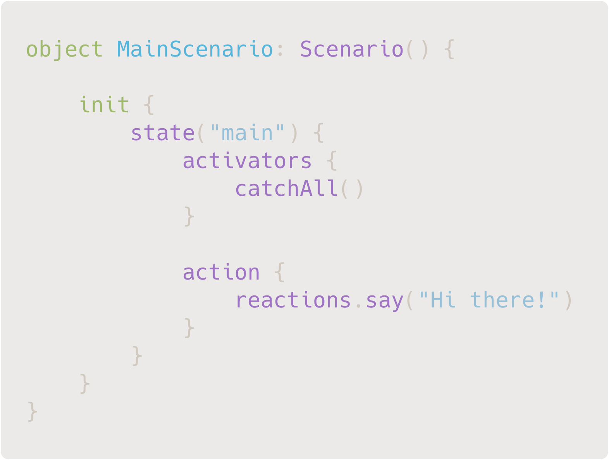
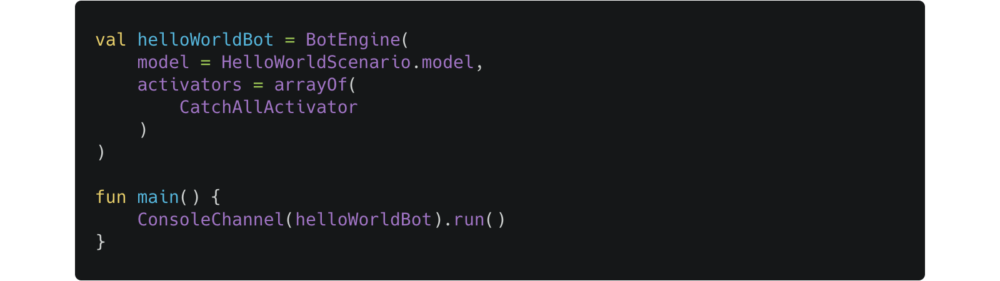
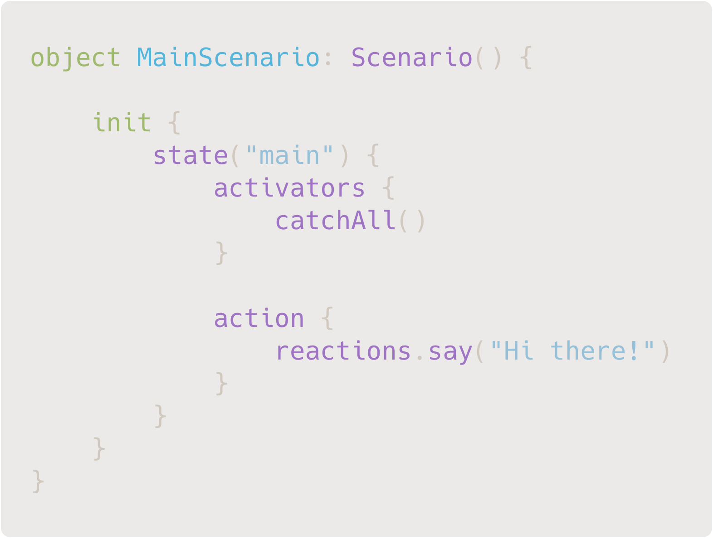
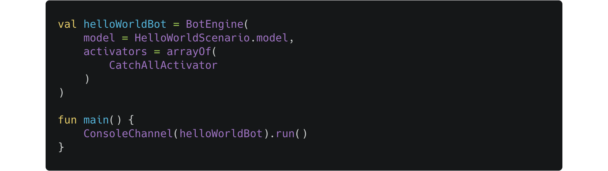

HOW TO START
Make these simple steps
Add JAICF libraries to your build.gradle

Create a simple dialogue scenario using Kotlin DSL
Run your dialogue as a Kotlin application
Open source Kotlin-based framework for conversational assistants and chat bots development
Kotlin based DSL enables you to create context-aware dialogues in a declarative manner
Works with any NLU engine and channels like Amazon Alexa, Facebook Messenger and others
JAICF is open source and available under Apache 2.0 means it is free for everyone
JAICF provides you with ready to use libraries to build a conversational project for any voice and chat platform. All you need is to start from a piece of docs to learn how to use it's power!
Get startedAdd JAICF libraries to your build.gradle
Create a simple dialogue scenario using Kotlin DSL
Run your dialogue as a Kotlin application
Yes! JAICF is free for use even in commercial purposes. It is licensed under Apache 2.0 license.
JAICF works with any language due to integrations with many NLU engines that actually recognise a user's requests.
JAICF is not a NLU engine or messenger. It is a dialogue manager that enables to create context-aware agents with any third-party NLU engine like Dialogflow or Rasa.
JAICF has ready to use libraries for Amazon Alexa, Google Actions, Facebook Messenger, Slack, Telegram and others. Moreover it is open source and can be easily extended with new channels and integrations.
Kemp House 160 City Road London EC1V 2NX